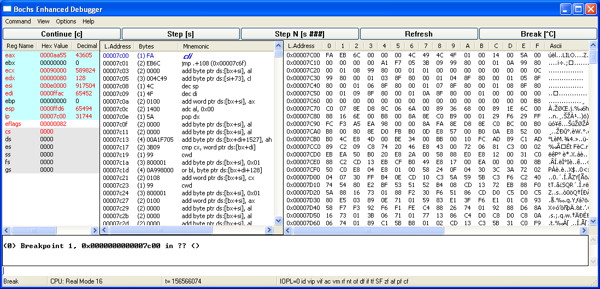

There is also another post about configuring and building Bochs on Windows & OS X if you have a problem compiling Bochs, take a look at here!
In my opinion, Bochs is an amazing thing because it provides instrumentation in the lowest level of the Operating System. One of the advantages of the Boch is being able to instrument in kernel-mode, which is not available in other instrumenting tools like Intel’s pin tool.
You can see how to interact with Bochs debugger here. It’s somehow like Windbg in its syntax, if you enabled the debugger feature during the compilation then after running the OS, you can press ctrl+c and it gives you a command-line interface.
In the rest of the post, I’m gonna explain about instrumentation.
Instrumenting in Bochs is depending on the following functions that exist in /stubs/ instrument.cc.
1
2
3
4
5
6
7
8
9
10
11
12
13
14
15
16
17
18
19
20
21
22
23
24
25
26
27
28
29
30
31
32
33
34
35
36
37
38
39
40
41
42
43
44
45
46
47
48
#include "bochs.h"
#if BX_INSTRUMENTATION
void bx_instr_init_env(void) {}
void bx_instr_exit_env(void) {}
void bx_instr_initialize(unsigned cpu) {}
void bx_instr_exit(unsigned cpu) {}
void bx_instr_reset(unsigned cpu, unsigned type) {}
void bx_instr_hlt(unsigned cpu) {}
void bx_instr_mwait(unsigned cpu, bx_phy_address addr, unsigned len, Bit32u flags) {}
void bx_instr_debug_promt() {}
void bx_instr_debug_cmd(const char *cmd) {}
void bx_instr_cnear_branch_taken(unsigned cpu, bx_address branch_eip, bx_address new_eip) {}
void bx_instr_cnear_branch_not_taken(unsigned cpu, bx_address branch_eip) {}
void bx_instr_ucnear_branch(unsigned cpu, unsigned what, bx_address branch_eip, bx_address new_eip) {}
void bx_instr_far_branch(unsigned cpu, unsigned what, Bit16u prev_cs, bx_address prev_eip, Bit16u new_cs, bx_address new_eip) {}
void bx_instr_opcode(unsigned cpu, bxInstruction_c *i, const Bit8u *opcode, unsigned len, bx_bool is32, bx_bool is64) {}
void bx_instr_interrupt(unsigned cpu, unsigned vector) {}
void bx_instr_exception(unsigned cpu, unsigned vector, unsigned error_code) {}
void bx_instr_hwinterrupt(unsigned cpu, unsigned vector, Bit16u cs, bx_address eip) {}
void bx_instr_tlb_cntrl(unsigned cpu, unsigned what, bx_phy_address new_cr3) {}
void bx_instr_clflush(unsigned cpu, bx_address laddr, bx_phy_address paddr) {}
void bx_instr_cache_cntrl(unsigned cpu, unsigned what) {}
void bx_instr_prefetch_hint(unsigned cpu, unsigned what, unsigned seg, bx_address offset) {}
void bx_instr_before_execution(unsigned cpu, bxInstruction_c *i) {}
void bx_instr_after_execution(unsigned cpu, bxInstruction_c *i) {}
void bx_instr_repeat_iteration(unsigned cpu, bxInstruction_c *i) {}
void bx_instr_inp(Bit16u addr, unsigned len) {}
void bx_instr_inp2(Bit16u addr, unsigned len, unsigned val) {}
void bx_instr_outp(Bit16u addr, unsigned len, unsigned val) {}
void bx_instr_lin_access(unsigned cpu, bx_address lin, bx_address phy, unsigned len, unsigned memtype, unsigned rw) {}
void bx_instr_phy_access(unsigned cpu, bx_address phy, unsigned len, unsigned memtype, unsigned rw) {}
void bx_instr_wrmsr(unsigned cpu, unsigned addr, Bit64u value) {}
void bx_instr_vmexit(unsigned cpu, Bit32u reason, Bit64u qualification) {}
#endif
For using Bochs instrumentation, first, you need to configure Bochs with the following argument:
1
./configure --enable-instrumentation="instrument/stubs"
Then you can change the above file and compile your project again and run Bochs with its debugger feature then Bochs automatically sets your function as a callback to its main CPU emulation functions and every time, one of the above functions performed in the target machine, then you’ll be aware.
The best reference for describing the above functions is Instrument.txt which exists under /instrument/Instrument.txt, I copied the newest version of Instrument.txt (at the time of writing this post), you can see the below file :
Instrumentation
To use instrumentation features in bochs, you must compile in support for it. You should build a custom instrumentation library in a separate directory in the “instrument/” directory. To tell configure which instrumentation library you want to use, use the “–enable-instrumentation” option. The default library consists of a set of stubs, and the following are equivalent:
1
2
./configure [...] --enable-instrumentation
./configure [...] --enable-instrumentation="instrument/stubs"
You could make a separate directory with your custom library, for example “instrument/myinstrument”, copy the contents of the “instrument/stubs” directory to it, then customize it. Use:
1
./configure [...] --enable-instrumentation="instrument/myinstrument"
BOCHS instrumentation callbacks
1
void bx_instr_init_env();
The callback is called when Bochs is initialized, before of reading .bochsrc. It can be used for registration of parameters in siminterface. Then when bx_instr_init() is called it can access configuration parameters defined by bx_instr_init_env(), so instrumentalization module can use additional options in .bochsrc.
1
void bx_instr_exit_env();
The callback is called each time Bochs exits.
1
void bx_instr_initialize(unsigned cpu);
The callback is called each time, when Bochs initializes the CPU object. It can be used for initialization of user’s data, dynamic memory allocation and etc.
1
void bx_instr_exit(unsigned cpu);
The callback is called each time, when Bochs destructs the CPU object. It can be used for destruction of user’s data, allocated by bx_instr_init callback.
1
void bx_instr_reset(unsigned cpu, unsigned type);
The callback is called each time, when Bochs resets the CPU object. It would be executed once at the start of simulation and each time that user presses RESET BUTTON on the simulator’s control panel.
1
void bx_instr_hlt(unsigned cpu);
The callback is called each time, when Bochs’ emulated CPU enters HALT or SHUTDOWN state.
1
void bx_instr_mwait(unsigned cpu, bx_phy_address addr, unsigned len, Bit32u flags);
The callback is called each time, when Bochs’ emulated CPU enters to the MWAIT state. The callback receives monitored memory range and MWAIT flags as a parameters.
1
void bx_instr_cnear_branch_taken(unsigned cpu, bx_address branch_rip, bx_address new_rip);
The callback is called each time, when currently executed instruction is a conditional near branch and it is taken.
1
void bx_instr_cnear_branch_not_taken(unsigned cpu, bx_address branch_rip);
The callback is called each time, when currently executed instruction is a conditional near branch and it is not taken.
1
void bx_instr_ucnear_branch(unsigned cpu, unsigned what, bx_address branch_rip, bx_address new_rip);
The callback is called each time, when currently executed instruction is an unconditional near branch (always taken).
1
void bx_instr_far_branch(unsigned cpu, unsigned what, Bit16u prev_cs, bx_address prev_rip, Bit16u new_cs, bx_address new_rip);
The callback is called each time, when currently executed instruction is an unconditional far branch (always taken).
Possible operation types, passed through bx_instr_ucnear_branch and bx_instr_far_branch are:
1
2
3
4
5
6
7
8
9
10
11
#define BX_INSTR_IS_JMP 10
#define BX_INSTR_IS_JMP_INDIRECT 11
#define BX_INSTR_IS_CALL 12
#define BX_INSTR_IS_CALL_INDIRECT 13
#define BX_INSTR_IS_RET 14
#define BX_INSTR_IS_IRET 15
#define BX_INSTR_IS_INT 16
#define BX_INSTR_IS_SYSCALL 17
#define BX_INSTR_IS_SYSRET 18
#define BX_INSTR_IS_SYSENTER 19
#define BX_INSTR_IS_SYSEXIT 20
1
void bx_instr_vmexit(unsigned cpu, Bit32u reason, Bit64u qualification);
This callback is called right before Bochs executes a VMEXIT.
1
void bx_instr_opcode(unsigned cpu, bxInstruction_c *i, const Bit8u *opcode, unsigned len, bx_bool is32, bx_bool is64);
The callback is called each time, when Bochs completes to decode a new instruction. Through this callback function Bochs could provide an opcode of the instruction, opcode length and an execution mode (16/32/64).
Note, that Bochs uses translation caches so each simulated instruction might be executed multiple times but decoded only once.
1
void bx_instr_interrupt(unsigned cpu, unsigned vector);
The callback is called each time, when Bochs simulator executes an interrupt (software interrupt, hardware interrupt or an exception).
1
void bx_instr_exception(unsigned cpu, unsigned vector, unsigned error_code);
The callback is called each time, when Bochs simulator executes an exception.
1
void bx_instr_hwinterrupt(unsigned cpu, unsigned vector, Bit16u cs, bx_address rip);
The callback is called each time, when Bochs simulator executes a hardware interrupt.
1
void bx_instr_clflush(unsigned cpu, bx_address laddr, bx_phy_address paddr);
The callback is called each time the CLFLUSH instruction is executed.
1
2
void bx_instr_tlb_cntrl(unsigned cpu, unsigned what, bx_phy_address new_cr_value);
void bx_instr_cache_cntrl(unsigned cpu, unsigned what);
The callback is called each time, when Bochs simulator executes a cache/tlb control instruction.
Possible instruction types, passed through bx_instr_tlb_cntrl are:
1
2
3
4
5
6
7
8
9
#define BX_INSTR_MOV_CR0 10
#define BX_INSTR_MOV_CR3 11
#define BX_INSTR_MOV_CR4 12
#define BX_INSTR_TASK_SWITCH 13
#define BX_INSTR_CONTEXT_SWITCH 14 /* VMM and SMM enter/exit */
#define BX_INSTR_INVLPG 15
#define BX_INSTR_INVEPT 16
#define BX_INSTR_INVVPID 17
#define BX_INSTR_INVPCID 18
The new_cr_value is provided for first 4 instruction types only and undefined for all others.
Possible instruction types, passed through bx_instr_cache_cntrl are:
1
2
#define BX_INSTR_INVD 10
#define BX_INSTR_WBINVD 11
1
void bx_instr_prefetch_hint(unsigned cpu, unsigned what, unsigned seg, bx_address offset);
The callback is called each time, when Bochs simulator executes a PREFETCH instruction.
Possible PREFETCH types:
1
2
3
4
#define BX_INSTR_PREFETCH_NTA 00
#define BX_INSTR_PREFETCH_T0 01
#define BX_INSTR_PREFETCH_T1 02
#define BX_INSTR_PREFETCH_T2 03
The seg/offset arguments indicate the address of the requested prefetch.
1
void bx_instr_wrmsr(unsigned cpu, unsigned msr, Bit64u value);
This callback is called each time when WRMSR instruction is executed. MSR number and written value passed as parameters to the callback function.
1
void bx_instr_repeat_iteration(unsigned cpu, bxInstruction_c *i);
The callback is called each time, when Bochs simulator starts a new repeat iteration.
1
void bx_instr_before_execution(unsigned cpu, bxInstruction_c *i);
The callback is called each time, when Bochs simulator starts a new instruction execution. In case of repeat instruction the callback will be called only once before the first iteration will be started.
1
void bx_instr_after_execution(unsigned cpu, bxInstruction_c *i);
The callback is called each time, when Bochs simulator finishes any instruction execution. In case of repeat instruction the callback will be called only once after all repeat iterations.
1
void bx_instr_lin_access(unsigned cpu, bx_address lin, bx_address phy, unsigned len, unsigned memtype, unsigned rw);
The callback is called each time, when Bochs simulator executes a linear memory access. Note that no page split accesses will be generated because Bochs splits page split accesses to two different memory accesses during its execution flow. The callback also will not be generated in case of direct physical memory access like page walks, SMM, VMM or SVM operations.
Possible access types are: BX_READ, BX_WRITE and BX_RW.
Currently the callback is not supported when repeat-speedups optimization is enabled.
1
void bx_instr_phy_access(unsigned cpu, bx_address lin, bx_address phy, unsigned len, unsigned memtype, unsigned rw);
The callback is called each time, when Bochs simulator executes a physical memory access. Physical accesses include memory accesses generated by the CPU during page walks, SMM, VMM or SVM operations. Note that no page split accesses will be generated because Bochs splits page split accesses to two different memory accesses during its execution flow.
Possible access types are: BX_READ, BX_WRITE and BX_RW.
1
2
3
void bx_instr_inp(Bit16u addr, unsigned len);
void bx_instr_inp2(Bit16u addr, unsigned len, unsigned val);
void bx_instr_outp(Bit16u addr, unsigned len, unsigned val);
These callback functions are a feedback from various system devices.
Known problems
1. BX_INSTR_LIN_ACCESS doesn’t work when repeat-speedups feature is enabled.
Feature requests:
1. BX_INSTR_CNEAR_BRANCH_NOT_TAKEN callback should have an additional ‘not taken’ new_rip parameter.
2. BX_INSTR_SMI, BX_INSTR_NMI, BX_INSTR_SIPI and other external events callbacks
If you read the above description about instrument functions, then let’s have a look at some of the important ones!
For debugging VMX you should use bx_instr_vmexit, but you should be sure to compile your Bochs with this feature enabled. By default it is enabled in the current version of Bochs :
1
#define BX_SUPPORT_VMX 2
bx_instr_phy_access can also help you debugging EPT (Extended Page Table) by checking physical addresses.
There are also other functions like bx_instr_wrmsr which is used for detecting what kind of MSR indexes an operating system or system drivers try to use.
References
- [Bochs User Manual] (http://bochs.sourceforge.net/doc/docbook/user/index.html)
- [Platform emulation with Bochs] (https://www.ibm.com/developerworks/library/l-bochs) - [PDF Version] (https://www.ibm.com/developerworks/library/l-bochs/l-bochs-pdf.pdf)
- [Wikipedia - Bochs] (https://en.wikipedia.org/wiki/Bochs)
- [Using Bochs internal debugger] (http://bochs.sourceforge.net/doc/docbook/user/internal-debugger.html)
Comments powered by Disqus.